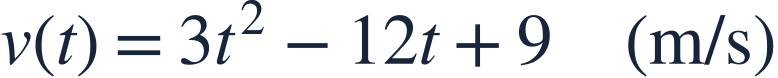
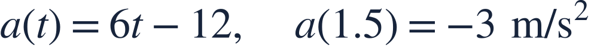

Velocity acceleration and speed
속도 가속도 속력

Speed depends on the magnitude of velocity, while speeding up depends on two signs.
속력은 속도의 크기이며, 속력이 증가하는지는 두 부호로 판단합니다.

Speed depends on the magnitude of velocity, while speeding up depends on two signs.
속력은 속도의 크기이며, 속력이 증가하는지는 두 부호로 판단합니다.
Acceleration is v′(t). Speed is |v(t)|.
가속도는 v′(t)이고 속력은 |v(t)|입니다.
When nonzero velocity and acceleration share a sign, speed increases.
속도와 가속도가 같은 부호의 0이 아닌 값이면 속력이 증가합니다.
Negative velocity means motion in the negative direction.
속도가 음수이므로 음의 방향으로 이동합니다.

Acceleration is also negative at this instant.
이 순간에는 가속도도 음수입니다.
Both signs are negative, so the object is speeding up.
두 부호가 모두 음수이므로 속력이 증가합니다.
Negative acceleration alone does not mean the object slows down.
가속도가 음수라는 이유만으로 속력이 감소한다고 할 수 없습니다.
Is the object speeding up or slowing down?
물체의 속력이 증가하나요, 감소하나요?